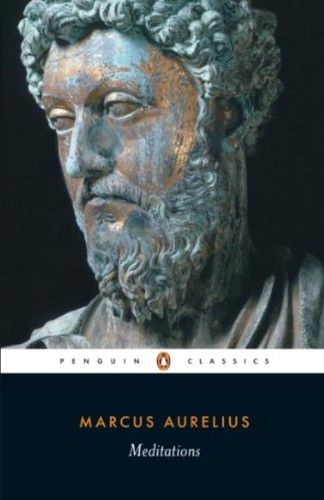

马可·奥勒留（Marcus Aurelius，121—180年）是古罗马帝国五贤帝中的最后一位，在位期间（161—180年）既要处理帝国边境的军事危机，又要应对国内的瘟疫与政治压力。《沉思录》并非为出版而作，而是马可·奥勒留在边境军营中写给自己的私人日记，以希腊文写就，直至他去世后方才流传于世。这些文字记录了他在最繁重的政务压力下，如何通过持续的自我审视与斯多葛哲学（Stoicism）的修炼来维持内心的平静与道德的清醒。全书共十二卷，没有连贯的叙事，更像是反复回到同一主题的默想：如何接受无法改变之事、如何专注于自身的善意与行动、如何在权力与荣耀中保持谦逊。
《沉思录》的核心是斯多葛哲学的实践纲领，而非学术论述。马可·奥勒留反复强调几条原则：其一，区分"在我控制之内"与"不在我控制之内"的事物——外部的荣辱、他人的评价、疾病与死亡，均不在控制范围内，唯有自己的判断、意图与行动可以自主；其二，活在当下，不为过去懊悔，不为未来焦虑，每一刻的专注行动才是生命的实质；其三，以宇宙的视角看待个人的得失——人的一生在历史长河中不过须臾，所有的荣耀与痛苦都将烟消云散，这种宏观视野非但不消极，反而是行动的解放；其四，把障碍转化为道路——"阻碍行动的东西，会成为行动的助力"（"The impediment to action advances action. What stands in the way becomes the way."）这句话后来被瑞安·霍利迪（Ryan Holiday）发展为《障碍就是道路》一书的核心命题。
《沉思录》在古今中外享有无与伦比的声誉，受到跨越时代与领域的推崇。比尔·克林顿将其列为他每年必读一遍的书籍，并在多个场合公开推荐。美国前国防部长詹姆斯·马蒂斯（James Mattis）在服役期间随身携带此书长达数十年，称其为"我的领导力指南"。斯多葛主义的当代传播者瑞安·霍利迪称《沉思录》是"有史以来最伟大的书"，并为多个新版本撰写了序言，他写道："这本书的伟大之处在于，它不是一个圣人写给凡人的教诲，而是一个凡人写给自己的挣扎与提醒——这让它的每一句话都具有真实的力量。"在商业界，从杰夫·贝索斯到伊隆·马斯克，许多知名创业者和企业家都曾公开谈及斯多葛哲学对自己决策思维的影响，而《沉思录》是斯多葛哲学最重要的原典。
对于商业与投资读者，《沉思录》的价值在于它训练了一种在极端压力下保持理性的能力。市场的起伏、公司的危机、投资的失败——这些本质上都是"在我控制之外"的外部事件，马可·奥勒留的哲学提供了一套将精力集中于可控部分、并在不可控中寻找主动空间的内心操作系统。查理·芒格多次提及斯多葛哲学对其思维框架的影响，他将避免不必要的情绪干扰视为投资判断力的重要基础。这本书写于近两千年前，却在今天的商业世界中依然被反复阅读，本身就说明了人类面对权力、财富、失败与死亡时，内心挣扎的结构从未真正改变过。